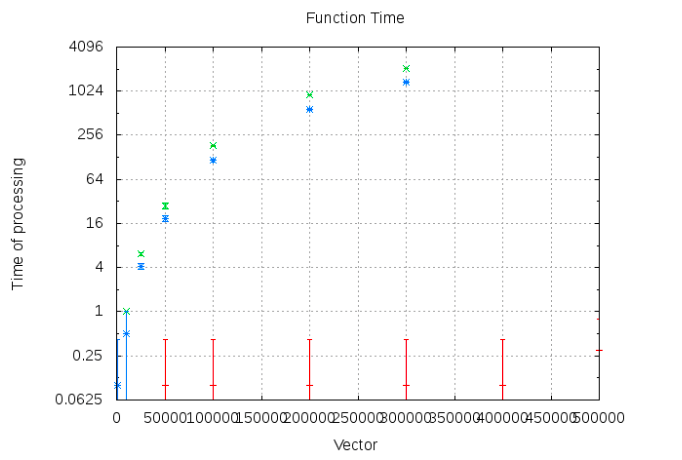
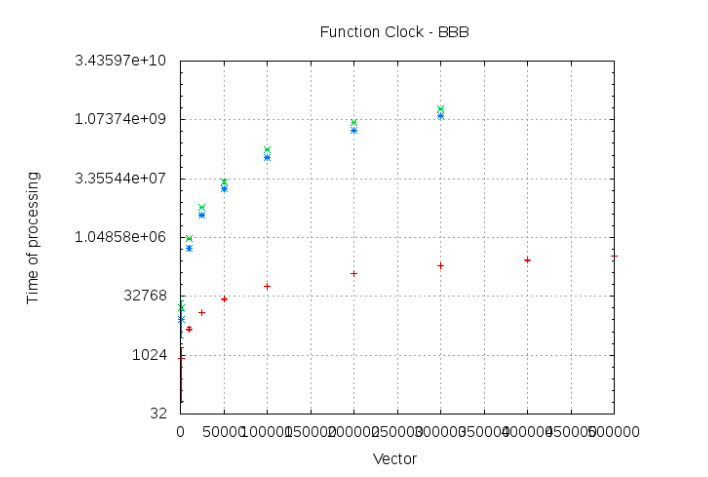

The following results were found by the program shown on the last post. We used gnuplot (sudo apt-get install gnuplot) to plot the data.
Remarkable information: the amount of time spent on the algorithms will be plotted using a logarithmic scale. Red means QuickSort, Green represents BubbleSort, and finally Blue will be ShellSort. We are presenting the average of amount of time spent (for 10 different input sizes, which are 1 000, 10 000, 25 000, 50 000, 100 000, 200 000, 300 000, 400 000 and 500 000). However, due to the excessive time required to complete BubbleSort for larger input sizes (15 hours or more), we limited the vector at 300 000 elements on BeagleBone.
This graph (and others which will appear below) may be generated using the following commands on the terminal:
gnuplot set title "Function Time - BBB" set xlabel "Vector" set ylabel "Time of processing" set grid set logscale y 2 set terminal png set output 'functiontime.png' plot 'timeqs.dat', 'timebb.dat', 'timess.dat' plot 'timeqs.dat' using 1:2:($2-$3):($2+$3) with errorbars, 'timebb.dat' using 1:2:($2-$3):($2+$3) with yerrorbars, 'timess.dat' using 1:2:($2-$3):($2+$3) with yerrorbars gnuplot>
For the clock funtions (counts up the number of clock cycles used by CPU), we got the following results:
Now, the results obtained using a computer with the following configuration:
Conclusions on the influence of the hardware architecture on the performance
We may notice examing the graphs that QuickSort was way faster throughout all tests, while BubbleSort was definitely the slowest to be executed. We have also noticed a large difference on the amount of time spent on the computer and on BeagleBone, especially when using a vector of size 300000, which took about 15 hours to be finished on the BBB.
Note that, on a computer, the standard deviation tends to be higher. This is probably because the CPU was required sometimes to execute toilsome tasks other than the algorithm, so in some cases we will get extraneous additional seconds.
Last but not least, using a 10 000 vector does not require just 10 times the time spent by a 1 000 vector, as we might had expected. This is because the CPU happens to get much more cache hits when a vector is small. As the cache size is limited, this effect might be weaker on very large vectors. When running BubbleSort, for instance, the more the size approaches the upper bound, 500 000, the more the curve tends to look like a quadratic curve, as opposed to a exponential curve, like in the beginning.